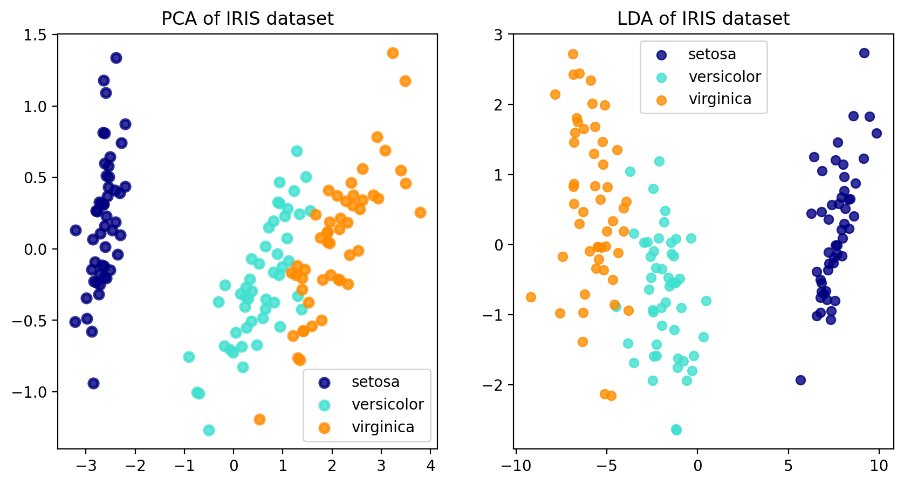

Background of the Analysis - Sir Ronald Fisher 1939
Other name: Linear discriminant analysis (LDA), normal discriminant analysis (NDA), or discriminant function analysis is a generalization of Fisher’s linear discriminant.
Fisher is a bigolgist who studies species of birds. (this story is hypothtical) Think in Fisher’s perspective I want to classify bird without measuring ratio…
The effect of LDA or PCA is similar to seeing a 3D object with one eye: projection of higher dimension into one dimension.
LDA will use known class label.
Linear Discriminant Analysis (LDA) tries to identify attributes that account for the most variance between classes. In particular, LDA, in contrast to PCA, is a supervised method, using known class labels…
import matplotlib.pyplot as pltfrom sklearn import datasetsfrom sklearn.decomposition import PCAfrom sklearn.discriminant_analysis import LinearDiscriminantAnalysisiris = datasets.load_iris()X = iris.datay = iris.targettarget_names = iris.target_names## fit model with principle componentpca = PCA(n_components=2)X_r = pca.fit(X).transform(X)## fit model with LDAlda = LinearDiscriminantAnalysis(n_components=2)X_r2 = lda.fit(X, y).transform(X)## plog graphfig, ax = plt.subplots(nrows=1,ncols=2,figsize=(10,5))ax1=ax[0]ax2=ax[1]colors = ["navy", "turquoise", "darkorange"]lw =2for color, i, target_name inzip(colors, [0, 1, 2], target_names): ax1.scatter( X_r[y == i, 0], X_r[y == i, 1], color=color, alpha=0.8, lw=lw, label=target_name )ax1.legend(loc="best", shadow=False, scatterpoints=1)ax1.set_title("PCA of IRIS dataset")for color, i, target_name inzip(colors, [0, 1, 2], target_names): ax2.scatter( X_r2[y == i, 0], X_r2[y == i, 1], alpha=0.8, color=color, label=target_name )ax2.legend(loc="best", shadow=False, scatterpoints=1)ax2.set_title("LDA of IRIS dataset")fig.show()
/var/folders/r5/1cdq52mn21zdnqzl0fvp44zw0000gn/T/ipykernel_98332/2715178903.py:43: UserWarning: Matplotlib is currently using module://matplotlib_inline.backend_inline, which is a non-GUI backend, so cannot show the figure.
fig.show()

This following section it maybe useful for popup a few images of iris:
From an artist’s perspective the differences between these iris’s are dimensionality of petal and sepal. The latend varible here is probably can view as (how square are these two petal)
pi_hat_1 = n1 / n ## baysian prior also frequency of targetpi_hat_2 = n2 / n ## baysian prior also frequency of target## avg,expected_value,or position of normalmu_hat_1 =1/ n1 * np.sum(x1, axis=0) #expected value for group1mu_hat_2 =1/ n2 * np.sum(x2, axis=0) #expected value for group2# variance, or width of normal functioncov_hat_1 =1/ (n1 -1) * np.matmul((x1 - mu_hat_1).T, (x1 - mu_hat_1)) # with-in group co-variancecov_hat_2 =1/ (n2 -1) * np.matmul((x2 - mu_hat_2).T, (x2 - mu_hat_2))cov_hat = (cov_hat_1 + cov_hat_2) /2
## defined log likelyhood functiondef LL(x # any point pair , mu # average value , sigma # covariance , prior): dist = x - mu cov_inv = np.linalg.inv(sigma) ## inversion of cov matrix cov_det = np.linalg.det(sigma) ## determinant of cov matrixreturn-1/2* np.log(2* np.pi * cov_det) -1/2* dist.T @ cov_inv @ dist + np.log(prior)## use this to test just so I simplify syntax of the function# assert LL_(point_grid[0],mu_hat_1, cov_hat, pi_hat_1) == LL(point_grid[0],mu_hat_1, cov_hat, pi_hat_1)## interestingly I also saw v.T * M * v.T in egen value + egen vector... so it reflect a common pattern of something? ## `cov_inv @ dist` is actually
Explain LL Formula:
In short LL is “Stacked Normal Distribution”
Given probability density function of a draw \(x_i\) from a normal distribute function:
Because the area under density function is one, the joint probability function of varible would be many of these PDF stacked together. The mental image for this is think of any vector (no matter the sequence). The probability of \(\xi={x_1 ... x_n}\) occur follow above function and it doesn’t matter which order.
The Log-likelihood Function is just this function logged:
\[
\theta = (\mu;\sigma^2) \\
\begin{align}
l(\theta; \xi) &= ln[(2\pi\sigma^2)^{-n/2}\exp(-\frac{1}{2\sigma^2} \sum_{i=1}^{n}{(x_i-\mu)^2} )] \\
&= ln[(2\pi\sigma^2) + \ln[exp(-\frac{1}{2\sigma^2} \sum_i^n{(x_i -\mu)^2} ))] \\
&= -\frac{n}{2}\ln(2\pi) - \frac{n}{2}\ln(\sigma^2) - \frac{1}{2\sigma^2}\sum_{i=1}^n{(x_i - \mu)^2}
\end{align}
\] The beauty of Log-Likelihood function is it canceled a lot of \(\exp\) element of normal distribution denity function and instead given you an algibratic expression, which you can then carry on to express with Matrix.
An Optimisation Problem
Log likelihoold function is used when \(\^{\theta}\) is unknown but a set of sample vector \(\xi\) is. This became a maximisation problem that obtain a \(\^{\theta}\) that will result that achieve this result. In the language of Math this is written as:
LDA approaches the problem by assuming that the condition \(p(x|y=0)\) and \(p(x|y=1)\) are both normal distribution, with mean and covariance parameter \((\mu, \sigma_0)\)\((\mu. \sigma_0)\), under this assumption, the Bayes-optimal solution is to predict points as being from the second class if the log of likelihood ratio is bigger than some threshold \(T\)
unfload to explain dist.T @ cov_inv @ dist
## I find it confusing when down to one dimension vector## because NP consider it no difference vertical or horizontalnp.array([1,2]) @ np.array([[1,2],[3,4]]) ## so this is in fact consider first as horizontal# 1 * 1 + 2 * 3 , 1 * 2 + 2 * 4## this code below will result in different value# np.array([[1,2],[3,4]]) @ np.array([1,2])np.array([1,2]) @ np.array([[1,2],[3,4]]) @ np.array([1,2]) ## 7 * 1 + 10 * 2
27
Display LL is a meshgird
point_grid = np.mgrid[-10:10.1:0.5, -10:10.1:0.5].reshape(2, -1).Tll_vals_1 = [LL(x, mu_hat_1, cov_hat, pi_hat_1) for x in point_grid]ll_vals_2 = [LL(x, mu_hat_2, cov_hat, pi_hat_2) for x in point_grid]point_gridfig = plt.figure()ax = fig.add_subplot()ax.scatter(point_grid[:, 0], point_grid[:, 1], c=ll_vals_1,marker="s")ax.plot(mu_hat_1[0], mu_hat_1[1], 'k-^', markersize=14)# ax.colorbar()ax.set_title("Log likely hood function")